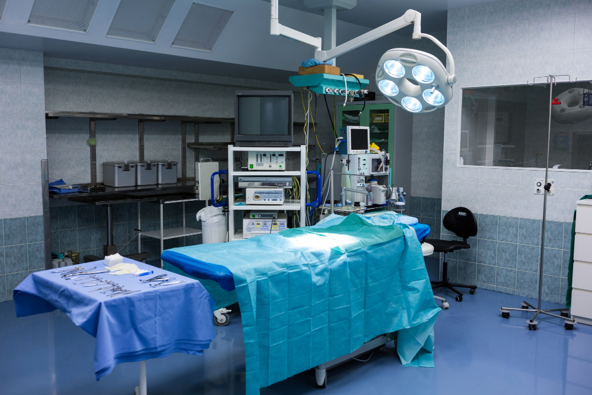
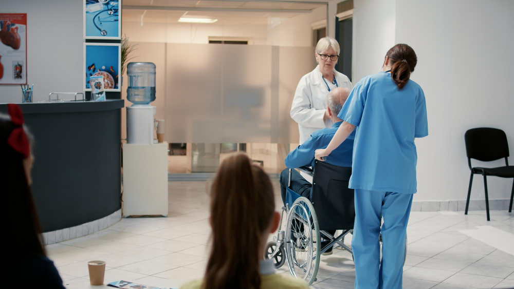
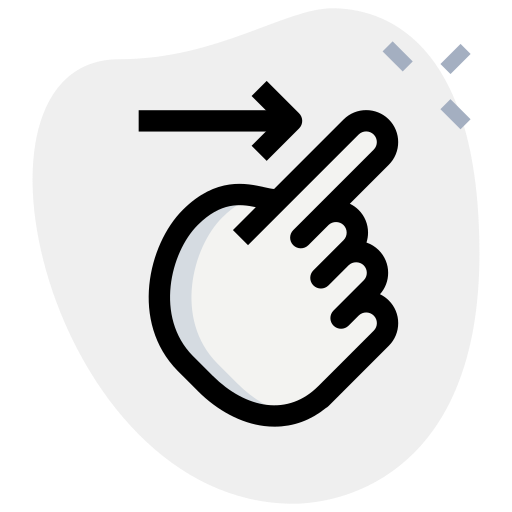

Médico Cirujano
Desliza la tabla
| Área: | Área 2: Ciencias Biológicas, Químicas y de la Salud |
| Sedes: | Ciudad de México | Estado de México |
| Aciertos Mínimos por Examen de Selección: |
|
| Promedio de Corte Pase Reglamentado: |
|
Datos Estadísticos (DGAE-UNAM):
La demanda a primer ingreso en esta licenciatura en el ciclo 2023-2024 fue de 31,033. La asignación total de lugares para esta carrera fue de 3,338, por lo que de cada 9 estudiantes que demandaron la carrera, ingresó 1. El 68% del alumnado de primer ingreso son mujeres y 32% hombres.
Descripción:
La Medicina es el conjunto de disciplinas científicas cuyo propósito primordial es promover, conservar y restaurar la salud de las personas, actuando siempre bajo un marco de referencia humanista. Su misión está enfocada a formar a los líderes de las próximas generaciones de médicos mexicanos y contribuir a establecer un sistema de salud capaz de desarrollar las capacidades físicas y mentales de nuestra población y colaborar en la preparación de investigadores en el campo de las Ciencias Médicas. El médico es un profesionista comprometido a preservar, mejorar y restablecer la salud del ser humano. Sus acciones se fundamentan en el conocimiento científico de los fenómenos biológicos, psicológicos y sociales. Su ejercicio profesional se orienta primordialmente a la práctica clínica, la cual debe ejercer con conocimiento, pericia, humanismo, arte, prudencia y juicio crítico, guiándose por un código ético que considera a la vida humana como valor supremo.

Características del aspirante:
El aspirante debe cursar el Área de las Ciencias Biológicas, Químicas y de la Salud en el bachillerato; en caso de que sea egresado del Colegio de Ciencias y Humanidades o de otros programas de Educación Media Superior tendrá que haber llevado el conjunto de asignaturas relacionadas con este campo de conocimiento y contar con:
- Sólidos conocimientos de matemáticas, biología, física y química y elementales de bioética y del método científico.
- Dominio del español.
- Conocimientos básicos del idioma inglés, de computación, y del método científico.
- Vocación de servicio.
- Capacidad para el aprendizaje autodirigido y autocontrolado.
- Capacidad de trabajo durante periodos prolongados y bajo presión.
- Equilibrio emocional y autocontrol.
- Disciplina.
- Salud física y mental.
- Ser sensibles a los problemas socioeconómicos de la población y entender la forma en que éstos afectan la salud.
Condiciones particulares:
El estudio de esta carrera requiere tiempo completo y origina gastos en cuanto a:
libros de texto, uniformes y equipo médico.
En el quinto año los alumnos permanecen en las sedes hospitalarias la mayor parte del día
y realiza guardias durante la noche y en el Servicio Social, en comunidades rurales.
De acuerdo con el Reglamento General de Estudios Técnicos y Profesionales y el Reglamento General de
Inscripciones, los estudiantes deberán cumplir con estos requisitos:
Para alumnos de la UNAM:
- Cubrir el plan de estudios de bachillerato.
- Solicitar la inscripción de acuerdo con los instructivos que se establezcan.
- En el caso de la Facultad de Medicina, cubrir los requisitos académicos aprobados por el H. Consejo Técnico.
Para aspirantes de otras instituciones de educación media superior:
- Cubrir el plan de estudios de bachillerato con un promedio mínimo de siete o su equivalente.
- Solicitar la inscripción de acuerdo con los instructivos que se establezcan.
Campo y mercado de trabajo:
Este profesionista trabaja en hospitales, clínicas y sanatorios, en la Secretaría de Salud, de la Defensa Nacional, IMSS, ISSSTE, así como en institutos de investigación. Los servicios del Sector Salud están organizados en tres niveles de atención:
- El primero: enfocado a la promoción de la salud individual, familiar y comunitaria y a la prevención y al tratamiento ambulatorio de las enfermedades más comunes.
- El segundo comprende las especialidades: Cirugía General, Gineco-Obstetricia, Medicina Interna y Pediatría.
- El tercero: subespecialidades como Neurología y Oncología.
México requiere un número mayor de médicos para aproximarse a estándares internacionales. Algunos indicadores de salud,
como esperanza de vida al nacer, prevalencia de obesidad, mortalidad infantil y materna podrían mejorar si aumenta el número
y la calidad de médicos.
Es necesario, por tanto, contar con recursos humanos que contribuyan al buen desempeño del sistema de salud, y que enfrenten los retos epidemiológicos.

Servicio Social:
Una vez concluido el estudio de las asignaturas los aspirantes a realizarlo deben:
Haber cubierto 100% de los créditos de los años previos del plan de estudios vigente.
Participar en las actividades académicas y formativas de inducción, previas al inicio del Servicio Social.
Realizarlo exclusivamente en unidades médicas del Sector Salud dentro del territorio nacional y en las entidades federativas con quienes la Facultad de Medicina tenga convenio.
Los alumnos que, en su condición de trabajadores de la federación con problemas de salud que no puedan realizar esa obligación académica asistencial en el área rural, podrán realizarla dentro del área metropolitana, siempre y cuando cumplan con las disposiciones generales de las “Bases para la Instrumentación del Servicio Social de las profesiones para la salud” (Artículo 17 del Reglamento de Servicio Social).
Podrán realizar el Servicio Social dentro del área de investigación los alumnos que hayan desarrollado una trayectoria curricular dentro de ella y cubran los requisitos que señala el artículo 17 del Reglamento de Servicio Social.

Título que se otorga: Médico Cirujano
Modalidad y Duración: Sistema escolarizado - Médico Cirujano, 5 y 1/2 años, más 1 año de Servicio Social. | Doctor en Medicina**Plan de Estudios Combinados en Medicina, Licenciatura y Doctorado (PECEM), 16 semestres.
Quien egresa de la licenciatura de Médico Cirujano de la Facultad de Medicina habrá adquirido, de las ocho competencias específicas de la formación profesional, una serie de atributos que le permitirá desempeñar, de manera eficiente, ética y responsable, su práctica profesional:
- Competencia 1. Pensamiento crítico, juicio clínico, toma de decisiones y manejo de información.
- Competencia 2. Aprendizaje autorregulado y permanente.
- Competencia 3. Comunicación efectiva.
- Competencia 4. Conocimiento y aplicación de las ciencias biomédicas, socio médicas y clínicas en el ejercicio de la Medicina.
- Competencia 5. Habilidades clínicas de diagnóstico, pronóstico, tratamiento y rehabilitación.
- Competencia 6. Profesionalismo, aspectos éticos y responsabilidades legales.
- Competencia 7. Salud poblacional y sistema de salud: promoción de la salud y prevención de la enfermedad.
- Competencia 8. Desarrollo personal.
- Haber aprobado el 100% de los créditos que se establecen en el plan de estudios y el número total de asignaturas del mismo plan.
- Tener acreditado el Servicio Social a través de la carta de liberación.
- Acreditar, mediante constancia expedida por la ENALLT, o alguna otra escuela o centro de enseñanza de idiomas de la UNAM, la comprensión de lectura en inglés nivel B2 del MCERL a través de los siguientes medios:
- Aprobación del examen de Comprensión de Textos Médicos en Inglés aplicado por el Programa de Inglés de la Facultad de Medicina.
- Aprobación del Curso de Comprensión de Textos Médico en Inglés B2 impartido por el Programa de Inglés de la Facultad de Medicina.
- Obtención del nivel B2 en la Evaluación Diagnóstica del perfil de ingreso referido al inglés de la Facultad de Medicina.
- Aprobación del Examen de Comprensión de Lectura en Inglés para Residentes Médicos aplicado por la ENALLT.
- Elegir y aprobar una de las opciones de titulación con que cuenta el plan de estudios, además de aprobar un examen práctico.
- Opción A. Titulación por actividad de investigación.
- Opción B. Titulación mediante examen general de conocimientos.
- Opción C. Titulación por totalidad de créditos y alto nivel académico.
- Opción D. Titulación por estudios de posgrado.
Jefatura de carrera de Médico Cirujano, Edificio de Gobierno, planta baja,
teléfono 55 56 23 06 46, fax 55 56 23 06 57, medicina@puma2.zaragoza.unam.mx.
Coordinación de Formación Integral, Edificio de Gobierno, cubículo 53, planta alta,
teléfono 55 56 23 06 58, teléfono y fax: 55 56 26 06 98, medicina@puma2.zaragoza.unam.mx
Avenida Guelatao 66, Ejército de Oriente, Iztapalapa, 09230, CDMX.
La carrera de Medicina de la Facultad de Estudios Superiores Zaragoza se encuentra acreditada ante el Consejo Mexicano para la Acreditación de la Educación Médica (COMAEM) y la Word Federation for Medical Education (WFME). Cuenta con un amplio acervo bibliográfico en las áreas de Ciencias de la Salud y el Comportamiento y en el área de Ciencias Químico-biológicas. También se cuenta con bases de datos científicas actualizadas.
Asimismo, dispone de sala de proyecciones, hemerotecas, aulas en la facultad y en sedes hospitalarias, laboratorios, anfiteatro (modelos anatómicos), quirófanos, dos auditorios, sala de seminarios, y laboratorio de cómputo con acceso a red UNAM.
Ofrece un área de formación integral (actividades deportivas y culturales), apoyo psicológico y programas de tutoría y becas.
Para el apoyo práctico y teórico cuenta con ocho unidades multiprofesionales de atención integral y Unidades Hospitalarias. Además, la Facultad ofrece a los alumnos cursos de maestría, doctorados y diplomados
La carrera de Medicina ha sido acreditada por el Consejo Mexicano para la Acreditación de la Educación Médica, A. C., COMAEM.
Encuestados: 52
- A los tres o cuatro años de haber concluido los estudios el 29.27% de los egresados se encuentran trabajando.
- El 100% de los egresados tiene un trabajo relacionado con su profesión.
- De los egresados que trabajan, un 66.67% está en el sector privado, y en el público, el 54.17%.
- El 75% de los egresados se desempeñan como empleados, mientras que el 29.17% se autoemplea, ya sea como propietarios o socios de una empresa, o bien, de manera independiente.
Para conocer la información completa (metodología, salarios, puestos) ingresa a: pveaju.unam.mx
Fuente: Encuesta realizada por el PVEAJU 2022-2023
Datos de la generación 2019
El alumnado requiere cubrir un curso de iniciación para el estudio de la Medicina, el cual tiene la finalidad de desarrollar las habilidades del pensamiento necesarias para el desarrollo de las competencias del plan de estudios, la formación médica y la construcción del razonamiento clínico.
Este curso, que consta de dos módulos, es obligatorio al ingresar a la licenciatura y se desarrollará durante los dos primeros semestres. En él se promoverán los razonamientos y las estrategias de aprendizaje necesarios para la formación del médico general.
Título que se otorga: Médico Cirujano
Modalidad y Duración: Sistema Escolarizado - 10 semestres, más 1 año de Servicio Social.
El egresado de FES Iztacala se ha formado como médico general para realizar su ejercicio profesional en las unidades del Sistema Nacional de Salud y posee:
- Pensamiento crítico, juicio clínico.
- Capacidad para la toma de decisiones y el manejo de la información.
- Dominio y aplicación de la clínica.
- Capacidad metodológica e instrumental en ciencias y humanidades.
- Comunicación efectiva y humana.
- Dominio ético y profesional en el ejercicio de la medicina.
- Capacidad de desarrollo e interés por su crecimiento profesional.
Asimismo, tendrá la capacidad para:
- Manejar la información basada en la mejor evidencia científica, la actualización y educación continua, presencial o a distancia.
- Desarrollar pensamiento crítico y razonamiento clínico.
- Analizar los fundamentos científicos de las ciencias básicas, psicosociales y clínicas.
- Insertarse en los diferentes escenarios del mercado laboral.
- Incorporarse al posgrado en instituciones nacionales e internacionales.
- Aprobar el 100% de los créditos del plan de estudios.
- Cumplir con el Servicio Social obligatorio.
- Acreditar el examen de comprensión de lectura del idioma inglés.
- Aprobar el examen profesional teórico por objetivos o elaboración de tesis (para obtener mención honorífica).
Jefatura de la carrera de Médico Cirujano, planta baja del Edificio de Gobierno
teléfonos 55 56 23 11 48/78/79/80, fax: 55 56 23 12 18
Avenida de los Barrios núm. 1, los Reyes Iztacala, 54090, Tlalnepantla, Estado de México.
https://medicina.iztacala.unam.mx
Instalaciones y servicios
El Centro Internacional de Simulación y Entrenamiento en Soporte Vital de Iztacala Cisesvi, cuenta con recursos de primer nivel para la enseñanza de la medicina, como sus maniquíes de alta tecnología, simulador SAM (Student Auscultation Manikin) para ruidos cardiacos y de trabajo de parto, e imparte talleres como: interpretación de electrocardiograma, manejo de electrocardiógrafo y monitor desfibrilador, colocación de sonda vesical, uso de técnica de vendaje y férulas, y cursos de soporte vital: salvacorazones, soporte vital básico (bls), y soporte vital cardiovascular avanzado (acls).
Intercambio académico
El Programa de Movilidad Estudiantil beneficia a estudiantes de alto promedio, quienes pueden realizar estancias de estudio fuera del país.
Apoyos extracurriculares
La FES Iztacala divulga la ciencia mediante conferencias, cursos extracurriculares, y exposiciones científicas y tecnológicas.
Actividades culturales
Con una amplia oferta de actividades, esta facultad promueve la cultura, el arte y fomenta las habilidades y sensibilidad artística de la comunidad universitaria con conciertos, ciclos de cine-debate y exposiciones de pintura y fotografía.
La carrera de Medicina ha sido acreditada por el Consejo Mexicano para la Acreditación de la Educación Médica, A. C., COMAEM.
Para inscribirse a los ciclos clínicos (quinto semestre) el alumno debe haber acreditado la totalidad de los módulos del primero al cuarto semestre. Para el internado de pregrado (noveno y décimo semestres) debe haber aprobado todos los módulos del quinto al octavo semestres, y para acreditar el año de internado rotatorio de pregrado tiene que cumplir 48 semanas de trabajo hospitalario ininterrumpido.
Encuestados: 68
- A los tres o cuatro años de haber concluido los estudios el 55.88% de los egresados se encuentran trabajando.
- El 94.74% de los egresados tiene un trabajo relacionado con su profesión.
- De los egresados que trabajan, un 65.79% está en el sector privado, en el público, el 31.58% y en el social, un 2.63%.
- El 97.37% de los egresados se desempeñan como empleados, mientras que el 2.63% se autoemplea, ya sea como propietarios o socios de una empresa, o bien, de manera independiente.
Para conocer la información completa (metodología, salarios, puestos) ingresa a: pveaju.unam.mx
Fuente: Encuesta realizada por el PVEAJU 2022-2023
Datos de la generación 2019
Título que se otorga: Médico Cirujano
Modalidad y Duración: Sistema Escolarizado - 5 años y medio, más 1 año de Servicio Social.
El egresado de FES Iztacala se ha formado como médico general para realizar su ejercicio profesional en las unidades del Sistema Nacional de Salud y posee:
- Pensamiento crítico, juicio clínico.
- Capacidad para la toma de decisiones y el manejo de la información.
- Dominio y aplicación de la clínica.
- Capacidad metodológica e instrumental en ciencias y humanidades.
- Comunicación efectiva y humana.
- Dominio ético y profesional en el ejercicio de la medicina.
- Capacidad de desarrollo e interés por su crecimiento profesional.
Asimismo, tendrá la capacidad para:
- Manejar la información basada en la mejor evidencia científica, la actualización y educación continua, presencial o a distancia.
- Desarrollar pensamiento crítico y razonamiento clínico.
- Analizar los fundamentos científicos de las ciencias básicas, psicosociales y clínicas.
- Insertarse en los diferentes escenarios del mercado laboral.
- Incorporarse al posgrado en instituciones nacionales e internacionales.
- Aprobar el 100% de los créditos del plan de estudios.
- Cumplir con el Servicio Social obligatorio.
- Acreditar el examen de comprensión de lectura del idioma inglés.
- Aprobar el examen profesional teórico por objetivos o elaboración de tesis (para obtener mención honorífica).
Jefatura de la carrera de Médico Cirujano, planta baja del Edificio de Gobierno
teléfonos 55 56 23 11 48/78/79/80, fax: 55 56 23 12 18
Avenida de los Barrios núm. 1, los Reyes Iztacala, 54090, Tlalnepantla, Estado de México.
https://medicina.iztacala.unam.mx
Instalaciones y servicios
El Centro Internacional de Simulación y Entrenamiento en Soporte Vital de Iztacala Cisesvi, cuenta con recursos de primer nivel para la enseñanza de la medicina, como sus maniquíes de alta tecnología, simulador SAM (Student Auscultation Manikin) para ruidos cardiacos y de trabajo de parto, e imparte talleres como: interpretación de electrocardiograma, manejo de electrocardiógrafo y monitor desfibrilador, colocación de sonda vesical, uso de técnica de vendaje y férulas, y cursos de soporte vital: salvacorazones, soporte vital básico (bls), y soporte vital cardiovascular avanzado (acls).
Intercambio académico
El Programa de Movilidad Estudiantil beneficia a estudiantes de alto promedio, quienes pueden realizar estancias de estudio fuera del país.
Apoyos extracurriculares
La FES Iztacala divulga la ciencia mediante conferencias, cursos extracurriculares, y exposiciones científicas y tecnológicas.
Actividades culturales
Con una amplia oferta de actividades, esta facultad promueve la cultura, el arte y fomenta las habilidades y sensibilidad artística de la comunidad universitaria con conciertos, ciclos de cine-debate y exposiciones de pintura y fotografía.
La carrera de Medicina ha sido acreditada por el Consejo Mexicano para la Acreditación de la Educación Médica, A. C., COMAEM.
Para inscribirse a los ciclos clínicos (quinto semestre) el alumno debe haber acreditado la totalidad de los módulos del primero al cuarto semestre. Para el internado de pregrado (noveno y décimo semestres) debe haber aprobado todos los módulos del quinto al octavo semestres, y para acreditar el año de internado rotatorio de pregrado tiene que cumplir 48 semanas de trabajo hospitalario ininterrumpido.
Encuestados: 68
- A los tres o cuatro años de haber concluido los estudios el 55.88% de los egresados se encuentran trabajando.
- El 94.74% de los egresados tiene un trabajo relacionado con su profesión.
- De los egresados que trabajan, un 65.79% está en el sector privado, en el público, el 31.58% y en el social, un 2.63%.
- El 97.37% de los egresados se desempeñan como empleados, mientras que el 2.63% se autoemplea, ya sea como propietarios o socios de una empresa, o bien, de manera independiente.
Para conocer la información completa (metodología, salarios, puestos) ingresa a: pveaju.unam.mx
Fuente: Encuesta realizada por el PVEAJU 2022-2023
Datos de la generación 2019